\ul
Summaries as Captions: Generating Figure Captions for Scientific Documents with Automated Text Summarization
Abstract
Good figure captions help paper readers understand complex scientific figures. Unfortunately, even published papers often have poorly written captions. Automatic caption generation could aid paper writers by providing good starting captions that can be refined for better quality. Prior work often treated figure caption generation as a vision-to-language task. In this paper, we show that it can be more effectively tackled as a text summarization task in scientific documents. We fine-tuned PEGASUS, a pre-trained abstractive summarization model, to specifically summarize figure-referencing paragraphs (e.g., “Figure 3 shows…”) into figure captions. Experiments on large-scale arXiv figures show that our method outperforms prior vision methods in both automatic and human evaluations. We further conducted an in-depth investigation focused on two key challenges: (i) the common presence of low-quality author-written captions and (ii) the lack of clear standards for good captions. Our code and data are available at: https://github.com/Crowd-AI-Lab/Generating-Figure-Captions-as-a-Text-Summarization-Task.
1 Introduction
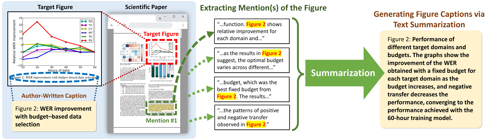
In scientific documents, effective figure captions help readers understand complex figures like bar charts, line charts, or pie charts. These captions describe the images and often include necessary context from the document’s full text Durbin (2004). Unfortunately, even published papers often have poorly-written captions. As per our analysis (Section 8.2), around 53.88% of line charts’ captions in arXiv cs.CL papers are found to be unhelpful for NLP readers. Automatic caption generation could aid paper writers by providing good starting captions that can be refined for better quality.
Previous research typically approached figure caption generation as a vision-to-language task, i.e., creating captions based on the image. For instance, Hsu et al. (2021) used an end-to-end approach with CNN+RNN structures, which extracted feature representation from the image and converted it into caption text. Qian et al. (2021) took a slightly different approach: first understanding what is in the image, pulling out key information, and then using a preset template to create the caption. However, although achieving some success in synthetic data Kahou et al. (2017); Kafle et al. (2018); Chen et al. (2020a); Zhu et al. (2021), these approaches often struggled to caption real-world figures. For example, Hsu et al. (2021)’s end-to-end approach, trained and tested using arXiv figures, achieved a BLEU-4 score of only 2.91.
In this paper, we argue that figure captioning in scientific documents can be more effectively tackled as a text-summarization task: The caption can be generated by summarizing the paragraphs mentioning the figure (as shown in Figure 1.) Scientific figures typically come with extensive text in the scientific document that can aid caption generation. Our analysis (Section 5) shows that, in arXiv, over 75% of words in figure captions can be aligned with the words in the paragraphs referencing those figures, which motivates our approach. The automatic evaluation shows that summarizing paragraphs referencing the figures results in better captions than prior vision-based methods. In a human evaluation by external domain experts, our best-performing model’s captions were preferred over the original captions 46.67% of the time.
We further conducted an in-depth investigation focused on two key challenges: (i) the common presence of low-quality author-written captions and (ii) the lack of clear standards for good captions. Surprisingly, 53.88% of the author-written captions in our sample was deemed unhelpful. This has implications for the design of future captioning systems, underscoring the influence of data quality on captioning performance.
2 Related Work
Prior figure captioning works can be broadly categorized into two approaches: caption generation (i) based on the image of the figure or (ii) based on the data chart underlying the figure.
Earlier image-based approaches focused on automated image understanding, which involved parsing images to extract the figure’s key attributes and converting parsed data into captions, e.g., using predefined templates Kahou et al. (2017); Kafle et al. (2018); Methani et al. (2020); Qian et al. (2021); Siegel et al. (2016). Recently, with the advance of deep learning, more works are adopting an end-to-end paradigm, generating captions straight from the neural representations of images Mahinpei et al. (2022); Pelka et al. (2021); Hsu et al. (2021); Chen et al. (2019); Kantharaj et al. (2022); Chen et al. (2020a). Our work contrasts with prior studies by focusing on text to generate captions instead of visuals. To the best of our knowledge, no existing figure-caption datasets explicitly contain the figures’ accompanying documents Pelka et al. (2021); Hsu et al. (2021); Chen et al. (2019), as this task has generally been approached as a vision task. Most recently, a knowledge-augmented image captioning method that uses both image and text data was introduced Yang et al. (2023), suggesting the potential of using text from documents.
Some approaches generate captions using the underlying tabular data of a figure rather than the figure’s image. Earlier approaches often employed rule-based techniques Corio and Lapalme (1999); Demir et al. (2008); Fasciano and Lapalme (1996); Mittal et al. (1998), while newer ones favor learning-based methods Barzilay and Lapata (2005); Wiseman et al. (2017); Moraes et al. (2014); Zhu et al. (2021); Kantharaj et al. (2022); Obeid and Hoque (2020); Reiter et al. (2005); Parikh et al. (2020); Chen et al. (2020b); Gong et al. (2019); Su et al. (2021); Chen et al. (2020c). Despite these approaches’ ability to utilize tabular and meta data, they necessitate access to the figure’s raw data. Contrarily, our work uses the rich textual information in scientific documents to generate captions.
3 Problem Statement and Terminology
A document contains figures, to , where has a caption that was written by the document author. In document , sentences, to , explicitly mention (e.g., “As shown in …”). The objective of this work is to automatically generate a high-quality caption, , for figure using only its mentions ( to ) and the surrounding text of the mentions in document .
In the rest of the paper, we use these terms:
| Source | Random | Mention | Paragraph | OCR | Window[0, 1] | Window[1, 0] | Window[1, 1] | Window[2, 2] | |||||||
| S | P | - | +OCR | - | +OCR | - | - | +OCR | - | +OCR | - | +OCR | - | +OCR | |
| Caption | 35.23 | 44.43 | 53.43 | 60.16 | 75.19 | 76.68 | 34.75 | 60.85 | 65.43 | 59.09 | 64.19 | 65.20 | 68.73 | 69.09 | 71.77 |
| Source | 32.52 | 19.52 | 39.51 | 18.78 | 12.53 | 9.39 | 20.79 | 30.49 | 17.19 | 32.40 | 17.33 | 25.10 | 15.55 | 19.84 | 13.45 |
-
•
A “Mention” refers to a sentence in a document that explicitly mentions the target figure, e.g., “As shown in Figure 6…” If there are multiple Mentions, the first Mention is referred to.
-
•
A “Paragraph” refers to a section of text containing a Mention. In this work, the boundaries of a Paragraph are determined by the <p> tag produced by PDF parsing.
-
•
Sentences near a Mention may contain relevant information, so we extracted preceding sentences and following sentences to form the “Window[n, m]” text snippet. For instance, “Window[1, 2]” refers to a snippet of four sentences, including one preceding sentence, the Mention sentence, and two following sentences.
-
•
An “OCR” refers to the textual information (e.g., legends, labels, etc.) extracted from the image, by optical character recognition (OCR) software.
4 Dataset
Before diving into our experiments and analyses, we first describe the dataset upon which our study is grounded. Our results are based on a scientific figure caption dataset, SciCap, and several pre-processing steps to fit it into our workflow.
SciCap is a dataset that contains over 416,000 line charts and captions extracted from more than 290,000 arXiv papers Hsu et al. (2021). It was one of the first large-scale figure-captioning datasets based on real-world scientific figures. However, it does not contain the paragraphs that mention the figure. To address this, we downloaded all the PDF files of the original arXiv papers used in SciCap and extracted all the Mentions and Paragraphs as outlined in Section 6.1. Detailed information on preprocessing, including the dataset resplit and OCR extraction, are described in Appendix B.
5 Motivating Analysis
To understand the correlation between mentions and captions, we performed a series of analyses using the data described in Section 4. Specifically, we investigated the extent to which the words in the figure captions are represented in the corresponding figure-mentioning paragraphs. We used awesome-align Dou and Neubig (2021) to obtain the alignment between the source texts (mentions, paragraphs, and OCRs) and captions. Awesome-align compared the similarity of the words’ contextual embeddings and assigned an alignment between words if the similarity passed a threshold. We used SciBERT Beltagy et al. (2019) to obtain contextual embeddings and softmax threshold = 0.99 to reduce false alignments.
After obtaining the alignments, we computed what percentage of information in the caption could be found in the source texts. The results shown in Table 1 indicate that 76.68% of the caption’s information could be found in Paragraph and OCR, motivating us to generate figure captions by summarizing Paragraph. We also observed that a randomly selected sentence and paragraph from the same paper can cover 35.23% and 44.43% of the caption, respectively, showing that there was some generic information-sharing across the paper. We also conducted a study using the exact overlapping (i.e., BLEU score) in Appendix A.
6 Generating Figure Captions as a Text Summarization Task
Figure 1 overviews the proposed pipeline. This section describes each step of the pipeline.
6.1 Extracting Mentions and Paragraphs
The system first extracts Mentions and their associated Paragraphs (as defined in Section 3.) In this paper, we used Grobid kermitt2 (2022), a publicly-available tool for converting PDF files into structured XML documents, to extract plain text from the paragraphs (including the <p> tags) in each paper. This plain text was then segmented into sentences using BlingFire microsoft (2022). We developed regular expressions to identify sentences mentioning specific figures. For instance, sentences such as “As shown in Figure 6, …” were first identified and then linked to Figure 6. To assess the performance of these regular expressions, we conducted a manual evaluation of 300 samples from our experimental dataset. The results showed a high level of precision (99.58%) and recall (94.44%).
6.2 Generating Captions Using Text Summarization Models
As shown in Figure 1, our system then automatically summarizes all the extracted Mentions (or Paragraphs) into a figure caption. In this work, we used PEGASUS, an abstractive summarization model Zhang et al. (2020), and fine-tuned it on our dataset. Five Pegasus models, PegasusM, PegasusP, PegasusO, PegasusM+O, and PegasusP+O, were trained utilizing five distinct input combinations, including (i) Mention, (ii) Paragraph, (iii) OCR output of the target figure image, (iv) Mention+OCR, and (v) Paragraph+OCR. PegasusP+O encompasses the most of relevant information in the document and thus is expected to yield the optimal summary.
Additionally, we built PegasusP+O+B, a specialized version of the model designed to be trained on a subset of higher-quality captions, (vi) Paragraph+OCR-Better. Given the absence of reliable automated ways to assess the quality of captions, we followed a guideline from previous studies indicating that longer captions enhance reader comprehension Hartley (2003); Gelman et al. (2002). We trained the model using captions with 30 or more tokens. The average caption length was 26.8 tokens, so we set 30 tokens as the threshold. The training was performed using Paragraph+OCR inputs.
We identified two major challenges in generating captions for scientific figures in real-world scenarios. We discuss these challenges in the following subsections, with an in-depth analysis in Section 8.
6.2.1 Challenge 1: Addressing Unreliable Quality of Real-World Data
Low-quality captions often occur in scholarly articles. Our analysis (see Section 8.1) showed that 50% of line charts’ author-written captions in arXiv cs.CL papers were deemed unhelpful by domain experts. The impact of this unreliable data quality is that developers could train and test captioning models with unhelpful captions. The lack of automatic methods for evaluating caption quality makes it hard to identify suitable training examples and eliminate poor ones. To address this issue, we included PegasusP+O+B that was trained on longer captions, which is suggested by literature to be more helpful to readers Hartley (2003); Gelman et al. (2002). To account for low-quality test data, we conducted both human and automatic evaluations. The data quality of figure captions was analyzed and is presented in Section 8.2.
6.2.2 Challenge 2: Defining a Clear Standard for “Good” Figure Captions
The deeper issue is the lack of a set of well-defined and actionable criteria for determining the usefulness of a figure caption. Although there are guidelines for writing effective scientific figure captions Rougier et al. (2014); Biegel and Kamat (2019), their translation into algorithmic models can be challenging. From a modeling standpoint, the lack of a clear goal presents a challenge, as it is uncertain what to optimize for once fluency has been achieved. In this paper, we focus on demonstrating the feasibility of generating captions via text summarization. Although we did not incorporate specialized goals in the model, we examine the criteria for a “good” caption in Section 8.2.
7 Experimental Results
| Model | Feature | Length | Rouge-1 (F1) | Rouge-2 (F1) | Rouge-L (F1) | MoverScore | BERTScore | |||||
| Score | Norm | Score | Norm | Score | Norm | Score | Norm | Score | Norm | |||
| Reuse | M | 33.2 | .291 | 1.346 | .139 | 1.790 | .239 | 1.401 | .535 | 1.023 | .628 | 1.064 |
| P | 238.3 | .171 | 1.042 | .089 | 1.006 | .134 | 1.030 | .503 | 1.004 | .567 | 1.008 | |
| W[0, 1] | 50.3 | .281 | 1.216 | .132 | 1.509 | .224 | 1.273 | .529 | 1.016 | .620 | 1.048 | |
| W[0, 2] | 68.0 | .259 | 1.129 | .123 | 1.341 | .205 | 1.186 | .524 | 1.013 | .611 | 1.034 | |
| W[1, 1] | 67.8 | .266 | 1.156 | .124 | 1.346 | .204 | 1.183 | .524 | 1.012 | .613 | 1.037 | |
| W[2, 2] | 98.7 | .235 | 1.082 | .112 | 1.179 | .180 | 1.105 | .517 | 1.007 | .600 | 1.020 | |
| Pegasus | M | 12.2 | .321 | 1.898 | .153 | 2.907 | .283 | 1.971 | .553 | 1.065 | .654 | 1.158 |
| M+O | 12.8 | .331 | 1.909 | .161 | 2.945 | .292 | 1.993 | .556 | 1.071 | .661 | 1.166 | |
| P | 14.0 | \ul.374 | \ul2.067 | \ul.205 | \ul3.507 | \ul.334 | \ul2.201 | \ul.570 | \ul1.095 | \ul.682 | \ul1.196 | |
| P+O | 14.0 | .381 | 2.106 | .212 | 3.635 | .340 | 2.242 | .571 | 1.097 | .685 | 1.202 | |
| P+O+B | 38.3 | .321 | 1.452 | .154 | 1.916 | .265 | 1.537 | .546 | 1.044 | .639 | 1.082 | |
| O | 12.1 | .133 | 0.789 | .026 | 0.495 | .119 | 0.828 | .518 | 0.998 | .561 | 0.993 | |
| TrOCR | Figure | 10.0 | .220 | 1.464 | .073 | 1.653 | .195 | 1.502 | .534 | 1.033 | .610 | 1.096 |
| BEiT+GPT2 | 15.8 | .164 | 0.864 | .042 | 0.666 | .144 | 0.917 | .529 | 1.013 | .592 | 1.031 | |
A Simple Baseline: Using Extracted Mentions as Captions.
Motivated by our information overlap study (Section 5), we created the Reuse baselines. These baselines simply repurpose portions of the input text as the prediction.
Vision-to-Language Baselines.
The vision-to-language generation treated this task as an image-captioning task that took the scientific figure image as input and generated a text to describe it. We compared two vision-to-language models as baselines. First, we built a sequence-to-sequence model by combining BEiT Bao et al. (2022) and GPT-2 Radford et al. (2019). We also selected the TrOCR Li et al. (2021) model, a transformer-based sequence-to-sequence model pre-trained for OCR tasks. Compared to image encoders like ViT Dosovitskiy et al. (2021) and BEiT Bao et al. (2022), which were trained on photos, OCR models trained on printed and handwritten documents align more closely with the scientific paper domain. All figures from SciCap (106,391 training samples) were used for training since no mentions were required.
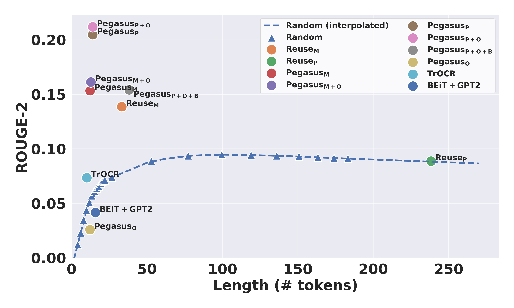
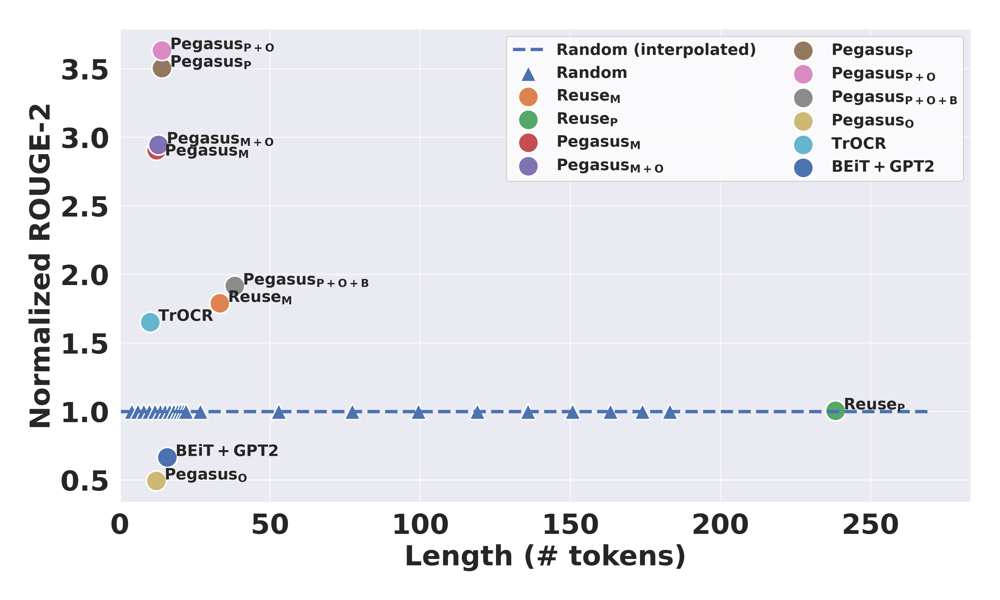
Experimental Setup.
A total of 14 methods were included for comparison: six reuse baselines with six input variations (M, P, W[0, 1], W[0, 2], W[1, 1], and W[2, 2]); five text summarization models with five inputs (M, M+O, P, P+O, and O); one text summarization model using P+O with controlled data quality; and two vision-to-language models (BEiT+GPT-2 and TrOCR). Note that we use subscripts of M, P, W, O, B to denote the input features: Mention, Paragraph, Window, OCR, and Better data quality, respectively. The model training details and decoding configuration are provided in Appendix C.
7.1 Automatic Evaluation Results
Conventional Automatic Evaluation.
We used F1 of ROUGE-1, ROUGE-2, ROUGE-L Lin (2004); Nallapati et al. (2016), MoverScore Zhao et al. (2019), and BERTScore for automatic evaluation. When computing ROUGE scores using rouge-score google research (2022), we turned all text into lower case and stem words. As both MoverScore and BERTScore are based on the semantic similarity, we obtained contextual embeddings from SciBERT Beltagy et al. (2019).
Automatic Evaluation with Normalization Over Caption Length.
ROUGE F1 tends to favor longer texts within a certain length, leading to a skewed comparison where models generating longer texts receive higher scores Sun et al. (2019). We followed Sun et al. (2019)’s approach of normalizing the scores with the corresponding random baseline that generates texts of the same length.
| (1) |
where is the average length of the texts generated by the target system. We estimated by applying linear interpolation on several (length, random score) pairs. The (length, random score) pairs were obtained by randomly selecting a certain number of sentences (1, 2, …, 10 sentences) from the input paragraph as the prediction. To get random scores of texts shorter than a single sentence (around 30 tokens), we truncated sentences to the desired length (4, 6, …, 30 tokens). For each length setting, we ran 10 different random seeds and reported the average. The Random line in Figure 2-Left shows the behavior of ROUGE-2 favoring longer texts within 50 tokens.111Similar trends for ROUGE-1, ROUGE-L, MoverScore, and BERTScore are included in Appendix E. The normalized scores, as shown in Figure 2-Right, clearly indicate the superiority of our proposed model over the random baseline.
Table 2 shows the normalized automatic evaluation results. Overall, PegasusP+O, the text-summarization model with all available information (Paragraph+OCR), achieved the best performance in all three metrics. PegasusP+O+B, the model using the same information but trained on a better subset of captions (Paragraph+OCR-Better), did not perform well. We hypothesized this was due to half of the test data comprising poor captions (refer to Section 8.2). This was validated by examining performance shifts in different quality beams (Section 8.1) and conducting a human evaluation (Section 7.2). Meanwhile, ReuseM, the Reuse baseline with Mention, outperforms other Reuse baselines. Its performance declined as context sizes grew and shifted.
7.2 Human Evaluation Results
Pilot MTurk Study to Select Top Models.
Before the main human evaluation, we ran a pilot study on Amazon Mechanical Turk (MTurk) to identify any apparently underperforming baselines for exclusion in the final study, simplifying the main human evaluations. In this study, we asked MTurk workers to carefully read a figure and select the worst figure caption among (i) TrOCR, (ii) PegasusP+O, (iii) PegasusP+O+B, and (iv) ground-truth caption. Ninety figures without errors were randomly sampled from our annotated set (i.e., figures from cs.CL arXiv papers in Section 8.2) for the study. For each of the figures, we recruited 20 MTurk workers to judge.222Four MTurk qualifications were used: Locale (US Only), HIT Approval Rate (98%), Number of Approved HITs (3000), and the Adult Content Qualification. The payment for each task was set to 0.09 (hourly wage = $10 dollars). We report the number of majority votes (when tied, we counted all captions with the highest votes as the worst) and the average number of votes in Table 3. Results indicated that TrOCR’s caption won the majority vote 41 out of 90 times, with its average vote count significantly exceeding others. Hence, we excluded TrOCR from our formal human evaluation.
Main Human Evaluation with Domain Experts.
Three Ph.D. students with NLP backgrounds (who are not coauthors) were recruited as human judges, as it is hard for those without basic domain understanding to evaluate captions. This study has been approved by the IRB office of the authors’ institute. The same 90 figures used in the pilot MTurk study were used again. We asked the human judges to compare each figure’s (i) PegasusP+O, (ii) PegasusP+O+B, and (iii) ground-truth caption. The judges were asked to rank the captions based on how strongly they agreed with this statement: “When I read the paper, this caption can help me understand the message that the figure tries to convey.” Figure 5 (see Appendix D) shows the interface the human judges used.
| n = 90 | #Maj. Votes | Avg. Votes | T-Test over Avg. Votes | ||
| PegP+O | PegP+O+B | Caption | |||
| TrOCR | 41 | 5.99 | <.001*** | .006** | .001** |
| PegP+O | 20 | 4.54 | - | .253 | .973 |
| PegP+O+B | 24 | 4.93 | - | - | .318 |
| Caption | 19 | 4.53 | - | - | - |
| n = 90 | Avg. Ranking | T-Test on Avg. Ranking | |
| PegP+O+B | Caption | ||
| PegP+O | 2.152 | .016* | .015* |
| PegP+O+B | 1.930 | - | .923 |
| Caption | 1.919 | - | - |
Table 4 shows the results of average ranking (from 1 to 3). Overall, the ground-truth caption and PegasusP+O+B were ranked similarly (1.919 vs. 1.930 with p-value = 0.923). Humans also favored PegasusP+O+B over PegasusP+O significantly (1.919 vs. 2.152 with p-value = 0.016). This supports our heuristic for automatically determining caption quality based on length and aligns with previous findings that longer captions improve reader comprehension Hartley (2003); Gelman et al. (2002). However, we found that the task of caption ranking poses a challenge, as evidenced by the lower correlations between raters, with Kendall’s tau values of 0.133, 0.148, and 0.274, and Spearman’s rho values of 0.128, 0.156, and 0.317. This highlights the complexity of the task and suggests that scaling human evaluation across domains might be difficult. Different preferences over captions, such as length, could lead to lower agreement among raters.
8 In-Depth Analysis
We conducted an in-depth investigation focused on two key challenges: (i) the common presence of low-quality author-written captions and (ii) the lack of clear standards for good captions.
Quality Annotation Procedure.
We manually annotated 438 captions in the Computation and Language domain (cs.CL) from the test set. Figure 6 (see Appendix D) shows the interface we used, in which the title, abstract, and PDF file of the paper were shown alongside the target figure’s image, caption, and questions. For each caption, we asked the annotators (coauthors) to rate four aspects using a five-point Likert scale:
| Agree | Disagree | Total | Agree Percentage | |
| Helpfulness | 184 | 215 | 399 | 46.12% |
| Image-Text | 338 | 61 | 399 | 84.71% |
| Visual-Desc | 64 | 335 | 399 | 16.04% |
| Takeaway | 74 | 325 | 399 | 18.55% |
-
•
Image-Text. The caption included named entities or important words/numbers in the figure (e.g., title, legends, labels, etc.).
-
•
Visual-Description. The caption included some visual characteristics of the figure (e.g., color, shape, trend, etc.).
-
•
Takeaway. The caption explicitly stated the high-level takeaway message or the conclusion that the figure attempted to convey.
-
•
Helpfulness. “The caption helped me understand the message that the figure attempted to convey”.
The annotated data was consolidated by grouping “Strongly Agree” and “Agree” as “[Agree]” and grouping “Neutral”, “Disagree”, and “Strongly Disagree” as “[Disagree]”. The results of this consolidation are presented in Table 5.
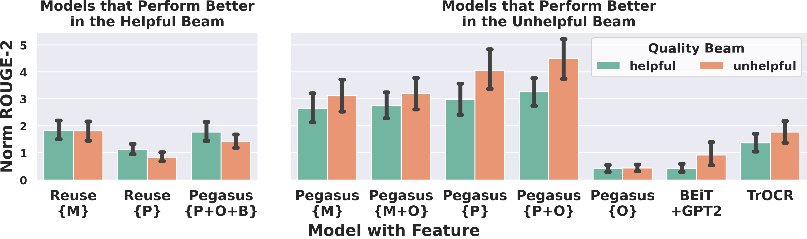
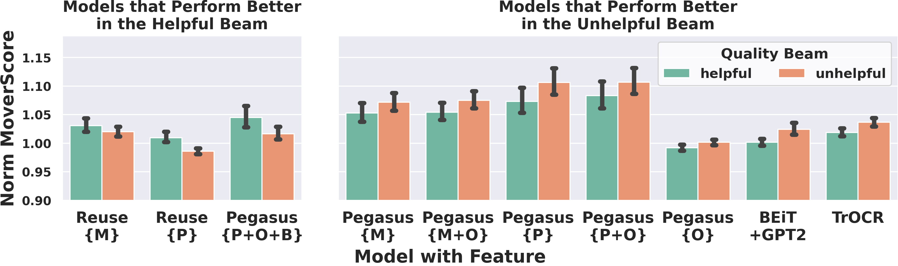
8.1 Challenge 1: Addressing Unreliable Quality of Real-World Data
Table 5 shows that over 50% of the author-written captions in arXiv cs.CL papers were deemed unhelpful. High unhelpful caption proportion may skew evaluation results, particularly for automatic evaluations that compare generated text to human-written captions. To address this, we evaluated models on different quality beams using the 399 annotated figure captions shown in Table 5. The captions were divided into the “helpful beam” (184 captions rated [Agree]) and the “unhelpful beam” (215 captions rated [Disagree]).
Automatic Evaluation Over Beams of Different Quality.
To validate the effect of low-quality captions, we re-performed the automatic evaluation for the helpful and unhelpful beam sets. Figure 3 shows the Normalized ROUGE-2 and MoverScore scores for each model in the helpful and unhelpful beam sets.333In addition, ROUGE-1, ROUGE-L, and BERTScore scores can be found in Figure 12 in Appendix E. Most models performed better in the unhelpful beam, except PegasusP+O+B, which had better scores in the helpful beam. PegasusP+O+B was trained on captions with more than 30 tokens. This result suggests that improving training data quality, such as by using only longer captions, can positively impact the model’s behavior and result in a better generation of helpful captions.
| #Sample | PegP+O | PegP+O+B | Caption | |
| Helpful | 55 | 2.176 | 1.970 | 1.855 |
| Unhelpful | 35 | 2.114 | 1.867 | 2.019 |
Human Evaluation Over Beams of Different Quality.
We also re-evaluated human scores for both the helpful and unhelpful beams. The human evaluation in Section 7.2 only covered 90 figures, with 55 in the helpful beam and 35 in the unhelpful beam. Table 6 shows the results. On average, PegasusP+O+B (1.867) was ranked better than author-written captions (2.019) in the unhelpful beam, in which machine-generated captions were preferred by human judges 22 out of 35 times. The results suggest that, with careful training data quality control, when author-written captions are not very helpful, machines could potentially generate better captions.
8.2 Challenge 2: What Constitutes a Good Figure Caption?
| Image-Text | Visual-Desc | Takeaway | Length | |
| Helpfulness | 0.206 | 0.523 | 0.686 | 0.383 |
| Image-Text | - | 0.177 | 0.186 | 0.248 |
| Visual-Desc | - | - | 0.625 | 0.535 |
| Takeaway | - | - | - | 0.514 |
We calculated Pearson correlations Rodgers and Nicewander (1988) among the four aspects using raw five-point Likert ratings. The results are shown in Table 7. The highest correlation was found between Takeaway and Helpfulness, suggesting that a high-quality caption accurately captures the main message of the figure. There were also strong correlations between Helpfulness, Visual-Description, and Takeaway, indicating that a good caption effectively conveys visual information and summarizes the main message. However, Table 5 shows that only 16.04% and 18.55% of the captions described the visual characteristics and the takeaway message, respectively.
8.3 Caption Length Distribution
Throughout this work’s development, the length of captions emerged as a consistent issue. Despite existing literature indicating the benefits of longer captions for readers Hartley (2003); Gelman et al. (2002), space limitations often leave authors with no option but to craft shorter captions. To shed some light on this aspect and offer insight for future research, we analyzed the lengths of both author-created and machine-generated captions. We used Kernel Density Estimate (KDE) plots to investigate the distribution of caption lengths across different models and domains. As shown in Figure 4(a), the majority of models demonstrate a common peak at 10 tokens, while PegasusP+O+B presents a significant deviation with a peak near 30 tokens. Figure 4(b) presents the distribution of helpfulness scores, derived from quality annotation data (see Section 8.2). Captions rated with a maximum helpfulness score of 5 show a peak at 35 tokens. We can also see a clear shift in caption length with higher scores. In Figure 4(c), we dug into the top 10 category taxonomy from arXiv. This figure suggests that a higher portion of the captions in cs, math, stat, and eess are shorter (10 tokens); while the rest of the categories (cond-mat, quant-ph, q-bio, etc) have higher probabilities for longer captions. However, within the cs domain (Figure 4(d)), the top 10 subcategories do not show significant differences regarding caption length distribution.
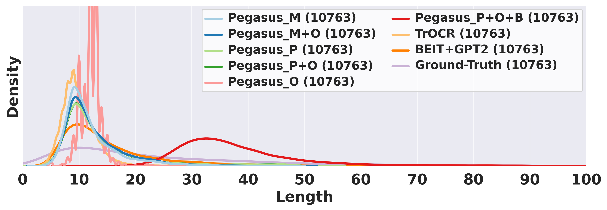
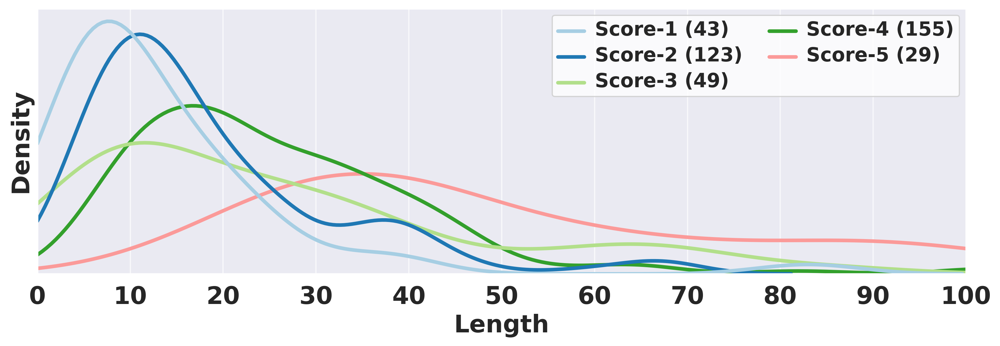
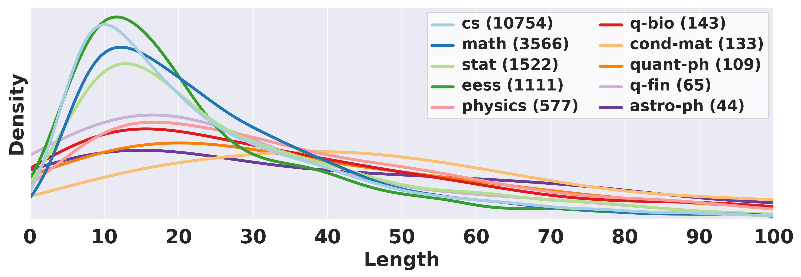
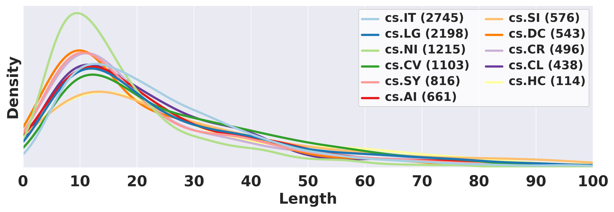
9 Discussion
| Information | Image-Text | Visual-Desc | Takeaway |
| #Tokens | 0.181 | 0.428 | 0.357 |
| Percentage | 0.099 | 0.279 | 0.210 |
Is Text Really All You Need?
Our results demonstrate that summarizing figure-mentioning paragraphs is sufficient to generate captions, as shown by the similar scores of PegasusP and PegasusP+O in Table 2. Adding OCR had limited impact. Furthermore, in a recent study of scientific figure captioning conducted by Yang et al. Yang et al. (2023), the best-performing model only considered figure-mentioning paragraphs and OCR tokens– note that their OCR tokens were visual features– without taking the figure’s imagery into account. These results raise an interesting question: Do we need visual information at all? What for? The token alignment study (Section 5) showed that 75.19% of the caption information could be found in the Paragraphs, meaning 24.81% of the information was missing. Understanding this missing information could help improve the models’ performance. Thus, we calculated the correlation between the amount of missing information and three aspect ratings (image-text, visual-description, and takeaway) in the quality annotation data (Section 8.2). The missing information was quantified as the number or percentage of tokens without aligning to any tokens in figure-mentioning paragraphs. Table 8 demonstrates a positive correlation between the extent of missing information and visual descriptions and takeaway messages. This suggests that incorporating visual descriptions (e.g., “dashed line,” “red line”) is key to enhancing performance by filling in the gaps in information not covered by the article’s text. Furthermore, the strong correlation between Helpfulness and Visual-Description in Table 5 also indicates that including image information is necessary for writing good captions. It should be noted that OCR is only capable of capturing image texts (e.g., labels, legends) and not visual element information (e.g., “dashed line”). A promising future direction is developing a multimodal model that can effectively incorporate both image and text.
What is the Best Length for Captions?
Our research indicates that filtering shorter captions can facilitate the generation of more helpful captions. However, the resulting captions tend to be longer than usual, as shown in the PegasusP+O+B shift to the right in Figure 4(a). This raises a question: Is it fair to compare short and long captions on usefulness, given that longer captions inherently contain more information? While our automatic evaluation addressed this by implementing length normalization, our human evaluations and quality annotations did not specifically instruct the annotators to consider caption lengths. Nevertheless, we argue that even if we asked annotators to consider caption lengths while identifying helpful captions, the “ideal” caption length would differ among annotators due to multiple factors. For example, as shown in Figure 4(c), the length distributions of captions vary across domains. The low inter-agreement from our human evaluation (see Section 7.2) also suggests that personal preferences could influence ideal caption length Lundgard and Satyanarayan (2021). Moreover, the ideal length could also be dictated by the context: writers might favor shorter captions due to page constraints, while readers might prefer longer but informative ones Stokes and Hearst (2022); Sun et al. (2019). To tackle this issue, a potential future direction could be enabling models to generate captions of diverse lengths to suit different users and contexts.
10 Conclusion and Future Work
This work presented a new perspective on automatic figure captioning, demonstrating that a language-based approach, i.e., summarizing figure-referring paragraphs, can outperform conventional vision-based methods. Our analysis further showed many unhelpful captions in arXiv papers, highlighting data quality’s impact on captioning performance. This work lays the groundwork for further research, including exploring new data selection, revision, and augmentation strategies to mitigate the effects of low-quality data, developing new evaluation methods, and creating more robust models that better handle noisy data. We also aim to expand the technology’s scope to cover a wider variety of figures and article types.
Acknowledgements
Thanks to the anonymous reviewers for their constructive feedback. This work is supported by Adobe’s gift funds and the seed funds from Pennsylvania State University’s College of Information Sciences and Technology (IST).
Limitations
Although our proposed methods have been shown to be effective, we are aware of several limitations. First, our approach requires mentions in order to produce captions, but it is not always easy to automatically identify the mentions for a given figure in real-world data. There were 18.81% of figures in the original SciCap that did not have any identified mentions, which we excluded from this work. Many factors contributed to the gap, including errors caused by upstream components such as image extraction or image type classification (e.g., table), unexpected figure index formats (e.g., “Figure VIII”, “Figure C·1”,“Fig.Fig. 4(b)”), PDF parsing errors, or the figure never being mentioned in the paper. Second, our method uses texts instead of images as the primary information source, so, naturally, it inherits all the constraints of text. Our method can not capture any visual element in the figure that the text never mentioned; it struggles when the text is poorly written. Finally, this paper focused on non-compound line charts in arXiv papers; the human evaluation only focused on NLP papers. More research is needed to examine the generalizability.
Ethics Statement
We consider the proposed technology to impose little risk to readers, as it only summarizes what has already been presented in the paper. However, when the generated caption contains some inaccurate information, it could mislead readers. Furthermore, the proposed technology has the nature of neglecting visual content, which might have an impact on the accessibility of figure captions.
References
- Bao et al. (2022) Hangbo Bao, Li Dong, Songhao Piao, and Furu Wei. 2022. BEit: BERT pre-training of image transformers. In International Conference on Learning Representations.
- Barzilay and Lapata (2005) Regina Barzilay and Mirella Lapata. 2005. Collective content selection for concept-to-text generation. In Proceedings of Human Language Technology Conference and Conference on Empirical Methods in Natural Language Processing, pages 331–338, Vancouver, British Columbia, Canada. Association for Computational Linguistics.
- Beltagy et al. (2019) Iz Beltagy, Kyle Lo, and Arman Cohan. 2019. SciBERT: A pretrained language model for scientific text. In Proceedings of the 2019 Conference on Empirical Methods in Natural Language Processing and the 9th International Joint Conference on Natural Language Processing (EMNLP-IJCNLP), pages 3615–3620, Hong Kong, China. Association for Computational Linguistics.
- Biegel and Kamat (2019) Constance M. Biegel and Prashant V. Kamat. 2019. Ten tips for capturing figures with captions. ACS Energy Letters, 4(3):637–638.
- Chen et al. (2019) Charles Chen, Ruiyi Zhang, Sungchul Kim, Scott Cohen, Tong Yu, Ryan Rossi, and Razvan Bunescu. 2019. Neural caption generation over figures. In Adjunct Proceedings of the 2019 ACM International Joint Conference on Pervasive and Ubiquitous Computing and Proceedings of the 2019 ACM International Symposium on Wearable Computers, UbiComp/ISWC ’19 Adjunct, page 482–485, New York, NY, USA. Association for Computing Machinery.
- Chen et al. (2020a) Charles Chen, Ruiyi Zhang, Eunyee Koh, Sungchul Kim, Scott Cohen, and Ryan Rossi. 2020a. Figure captioning with relation maps for reasoning. In 2020 IEEE Winter Conference on Applications of Computer Vision (WACV), pages 1526–1534.
- Chen et al. (2020b) Wenhu Chen, Jianshu Chen, Yu Su, Zhiyu Chen, and William Yang Wang. 2020b. Logical natural language generation from open-domain tables. In Proceedings of the 58th Annual Meeting of the Association for Computational Linguistics, pages 7929–7942, Online. Association for Computational Linguistics.
- Chen et al. (2020c) Zhiyu Chen, Wenhu Chen, Hanwen Zha, Xiyou Zhou, Yunkai Zhang, Sairam Sundaresan, and William Yang Wang. 2020c. Logic2Text: High-fidelity natural language generation from logical forms. In Findings of the Association for Computational Linguistics: EMNLP 2020, pages 2096–2111, Online. Association for Computational Linguistics.
- Corio and Lapalme (1999) Marc Corio and Guy Lapalme. 1999. Generation of texts for information graphics. In Proceedings of the 7th European Workshop on Natural Language Generation EWNLG’99, pages 49–58.
- Demir et al. (2008) Seniz Demir, Sandra Carberry, and Kathleen F McCoy. 2008. Generating textual summaries of bar charts. In Proceedings of the Fifth International Natural Language Generation Conference, pages 7–15.
- Dosovitskiy et al. (2021) Alexey Dosovitskiy, Lucas Beyer, Alexander Kolesnikov, Dirk Weissenborn, Xiaohua Zhai, Thomas Unterthiner, Mostafa Dehghani, Matthias Minderer, Georg Heigold, Sylvain Gelly, Jakob Uszkoreit, and Neil Houlsby. 2021. An image is worth 16x16 words: Transformers for image recognition at scale. ICLR.
- Dou and Neubig (2021) Zi-Yi Dou and Graham Neubig. 2021. Word alignment by fine-tuning embeddings on parallel corpora. In Conference of the European Chapter of the Association for Computational Linguistics (EACL).
- Doulaty et al. (2015) Mortaza Doulaty, Oscar Saz, and Thomas Hain. 2015. Data-selective transfer learning for multi-domain speech recognition. In INTERSPEECH 2015, 16th Annual Conference of the International Speech Communication Association, Dresden, Germany, September 6-10, 2015, pages 2897–2901. ISCA.
- Durbin (2004) Charles G Durbin. 2004. Effective use of tables and figures in abstracts, presentations, and papers. Respiratory care, 49(10):1233–1237.
- Fasciano and Lapalme (1996) Massimo Fasciano and Guy Lapalme. 1996. Postgraphe: a system for the generation of statistical graphics and text. In Eighth International Natural Language Generation Workshop.
- Gelman et al. (2002) Andrew Gelman, Cristian Pasarica, and Rahul Dodhia. 2002. Let’s practice what we preach: turning tables into graphs. The American Statistician, 56(2):121–130.
- Gong et al. (2019) Li Gong, Josep Crego, and Jean Senellart. 2019. Enhanced transformer model for data-to-text generation. In Proceedings of the 3rd Workshop on Neural Generation and Translation, pages 148–156, Hong Kong. Association for Computational Linguistics.
- google research (2022) google research. 2022. Python rouge implementation. https://github.com/google-research/google-research/tree/master/rouge.
- Hartley (2003) James Hartley. 2003. Single authors are not alone: Colleagues often help. Journal of Scholarly Publishing, 34(2):108–113.
- Hsu et al. (2021) Ting-Yao Hsu, C Lee Giles, and Ting-Hao Huang. 2021. SciCap: Generating captions for scientific figures. In Findings of the Association for Computational Linguistics: EMNLP 2021, pages 3258–3264, Punta Cana, Dominican Republic. Association for Computational Linguistics.
- JaidedAI (2022) JaidedAI. 2022. Easyocr. https://github.com/JaidedAI/EasyOCR.
- Jiang et al. (2019) Zhuoxuan Jiang, Ziming Huang, Dong Sheng Li, and Xian-Ling Mao. 2019. Dialogact2vec: Towards end-to-end dialogue agent by multi-task representation learning. CoRR, abs/1911.04088.
- Kafle et al. (2018) Kushal Kafle, Brian Price, Scott Cohen, and Christopher Kanan. 2018. Dvqa: Understanding data visualizations via question answering. In Proceedings of the IEEE conference on computer vision and pattern recognition, pages 5648–5656.
- Kahou et al. (2017) Samira Ebrahimi Kahou, Vincent Michalski, Adam Atkinson, Ákos Kádár, Adam Trischler, and Yoshua Bengio. 2017. Figureqa: An annotated figure dataset for visual reasoning. Sixth International Conference on Learning Representations Workshop.
- Kantharaj et al. (2022) Shankar Kantharaj, Rixie Tiffany Leong, Xiang Lin, Ahmed Masry, Megh Thakkar, Enamul Hoque, and Shafiq Joty. 2022. Chart-to-text: A large-scale benchmark for chart summarization. In Proceedings of the 60th Annual Meeting of the Association for Computational Linguistics (Volume 1: Long Papers), pages 4005–4023, Dublin, Ireland. Association for Computational Linguistics.
- kermitt2 (2022) kermitt2. 2022. Grobid. https://github.com/kermitt2/grobid.
- Li et al. (2021) Minghao Li, Tengchao Lv, Lei Cui, Yijuan Lu, Dinei Florencio, Cha Zhang, Zhoujun Li, and Furu Wei. 2021. Trocr: Transformer-based optical character recognition with pre-trained models. arXiv preprint arXiv:2109.10282.
- Lin (2004) Chin-Yew Lin. 2004. ROUGE: A package for automatic evaluation of summaries. In Text Summarization Branches Out, pages 74–81, Barcelona, Spain. Association for Computational Linguistics.
- Liu and Liu (2021) Yixin Liu and Pengfei Liu. 2021. SimCLS: A simple framework for contrastive learning of abstractive summarization. In Proceedings of the 59th Annual Meeting of the Association for Computational Linguistics and the 11th International Joint Conference on Natural Language Processing (Volume 2: Short Papers), pages 1065–1072, Online. Association for Computational Linguistics.
- Loshchilov and Hutter (2019) Ilya Loshchilov and Frank Hutter. 2019. Decoupled weight decay regularization. In International Conference on Learning Representations.
- Lundgard and Satyanarayan (2021) Alan Lundgard and Arvind Satyanarayan. 2021. Accessible visualization via natural language descriptions: A four-level model of semantic content. IEEE transactions on visualization and computer graphics, 28(1):1073–1083.
- Mahinpei et al. (2022) A. Mahinpei, Z. Kostic, and C. Tanner. 2022. Linecap: Line charts for data visualization captioning models. In 2022 IEEE Visualization and Visual Analytics (VIS), pages 35–39, Los Alamitos, CA, USA. IEEE Computer Society.
- Methani et al. (2020) Nitesh Methani, Pritha Ganguly, Mitesh M. Khapra, and Pratyush Kumar. 2020. Plotqa: Reasoning over scientific plots. In Proceedings of the IEEE/CVF Winter Conference on Applications of Computer Vision (WACV).
- microsoft (2022) microsoft. 2022. Blingfire. https://github.com/microsoft/BlingFire.
- Mittal et al. (1998) Vibhu O Mittal, Johanna D Moore, Giuseppe Carenini, and Steven Roth. 1998. Describing complex charts in natural language: A caption generation system. Computational Linguistics, 24(3):431–467.
- Moraes et al. (2014) Priscilla Moraes, Gabriel Sina, Kathy McCoy, and Sandra Carberry. 2014. Generating summaries of line graphs. In Proceedings of the 8th International Natural Language Generation Conference (INLG), pages 95–98.
- Nallapati et al. (2016) Ramesh Nallapati, Bowen Zhou, Cicero dos Santos, Çağlar Gulçehre, and Bing Xiang. 2016. Abstractive text summarization using sequence-to-sequence RNNs and beyond. In Proceedings of The 20th SIGNLL Conference on Computational Natural Language Learning, pages 280–290, Berlin, Germany. Association for Computational Linguistics.
- Obeid and Hoque (2020) Jason Obeid and Enamul Hoque. 2020. Chart-to-text: Generating natural language descriptions for charts by adapting the transformer model. In Proceedings of the 13th International Conference on Natural Language Generation, pages 138–147, Dublin, Ireland. Association for Computational Linguistics.
- Parikh et al. (2020) Ankur Parikh, Xuezhi Wang, Sebastian Gehrmann, Manaal Faruqui, Bhuwan Dhingra, Diyi Yang, and Dipanjan Das. 2020. ToTTo: A controlled table-to-text generation dataset. In Proceedings of the 2020 Conference on Empirical Methods in Natural Language Processing (EMNLP), pages 1173–1186, Online. Association for Computational Linguistics.
- Pelka et al. (2021) Obioma Pelka, Asma Ben Abacha, Alba García Seco de Herrera, Janadhip Jacutprakart, Christoph M Friedrich, and Henning Müller. 2021. Overview of the ImageCLEFmed 2021 concept & caption prediction task. In CLEF2021 Working Notes, CEUR Workshop Proceedings, Bucharest, Romania. CEUR-WS.org.
- Qian et al. (2021) Xin Qian, Eunyee Koh, Fan Du, Sungchul Kim, Joel Chan, Ryan A Rossi, Sana Malik, and Tak Yeon Lee. 2021. Generating accurate caption units for figure captioning. In Proceedings of the Web Conference 2021, pages 2792–2804.
- Radford et al. (2019) Alec Radford, Jeffrey Wu, Rewon Child, David Luan, Dario Amodei, Ilya Sutskever, et al. 2019. Language models are unsupervised multitask learners. OpenAI blog, 1(8):9.
- Reiter et al. (2005) Ehud Reiter, Somayajulu Sripada, Jim Hunter, Jin Yu, and Ian Davy. 2005. Choosing words in computer-generated weather forecasts. Artificial Intelligence, 167(1-2):137–169.
- Rodgers and Nicewander (1988) Joseph Lee Rodgers and W. Alan Nicewander. 1988. Thirteen ways to look at the correlation coefficient. The American Statistician, 42(1):59–66.
- Rougier et al. (2014) Nicolas P. Rougier, Michael Droettboom, and Philip E. Bourne. 2014. Ten simple rules for better figures. PLOS Computational Biology, 10(9):1–7.
- Siegel et al. (2016) Noah Siegel, Zachary Horvitz, Roie Levin, Santosh Divvala, and Ali Farhadi. 2016. Figureseer: Parsing result-figures in research papers. In European Conference on Computer Vision, pages 664–680. Springer.
- Stokes and Hearst (2022) Chase Stokes and Marti Hearst. 2022. Why more text is (often) better: Themes from reader preferences for integration of charts and text. The NLVIZ workshop at IEEE Transaction on Visualization and Graphics conference.
- Su et al. (2021) Yixuan Su, David Vandyke, Sihui Wang, Yimai Fang, and Nigel Collier. 2021. Plan-then-generate: Controlled data-to-text generation via planning. In Findings of the Association for Computational Linguistics: EMNLP 2021, pages 895–909, Punta Cana, Dominican Republic. Association for Computational Linguistics.
- Sun et al. (2019) Simeng Sun, Ori Shapira, Ido Dagan, and Ani Nenkova. 2019. How to compare summarizers without target length? pitfalls, solutions and re-examination of the neural summarization literature. In Proceedings of the Workshop on Methods for Optimizing and Evaluating Neural Language Generation, pages 21–29, Minneapolis, Minnesota. Association for Computational Linguistics.
- Wang and Zhao (2019) Jie Wang and Xinyan Zhao. 2019. Theme-aware generation model for chinese lyrics. arXiv preprint arXiv:1906.02134.
- Wiseman et al. (2017) Sam Wiseman, Stuart Shieber, and Alexander Rush. 2017. Challenges in data-to-document generation. In Proceedings of the 2017 Conference on Empirical Methods in Natural Language Processing, pages 2253–2263, Copenhagen, Denmark. Association for Computational Linguistics.
- Wolf et al. (2020) Thomas Wolf, Lysandre Debut, Victor Sanh, Julien Chaumond, Clement Delangue, Anthony Moi, Pierric Cistac, Tim Rault, Rémi Louf, Morgan Funtowicz, Joe Davison, Sam Shleifer, Patrick von Platen, Clara Ma, Yacine Jernite, Julien Plu, Canwen Xu, Teven Le Scao, Sylvain Gugger, Mariama Drame, Quentin Lhoest, and Alexander M. Rush. 2020. Transformers: State-of-the-art natural language processing. In Proceedings of the 2020 Conference on Empirical Methods in Natural Language Processing: System Demonstrations, pages 38–45, Online. Association for Computational Linguistics.
- Xu et al. (2020) Jiacheng Xu, Zhe Gan, Yu Cheng, and Jingjing Liu. 2020. Discourse-aware neural extractive text summarization. In Proceedings of the 58th Annual Meeting of the Association for Computational Linguistics, pages 5021–5031, Online. Association for Computational Linguistics.
- Yang et al. (2023) Zhishen Yang, Raj Dabre, Hideki Tanaka, and Naoaki Okazaki. 2023. Scicap+: A knowledge augmented dataset to study the challenges of scientific figure captioning.
- Zhang et al. (2020) Jingqing Zhang, Yao Zhao, Mohammad Saleh, and Peter Liu. 2020. Pegasus: Pre-training with extracted gap-sentences for abstractive summarization. In International Conference on Machine Learning, pages 11328–11339. PMLR.
- Zhao et al. (2019) Wei Zhao, Maxime Peyrard, Fei Liu, Yang Gao, Christian M. Meyer, and Steffen Eger. 2019. MoverScore: Text generation evaluating with contextualized embeddings and earth mover distance. In Proceedings of the 2019 Conference on Empirical Methods in Natural Language Processing and the 9th International Joint Conference on Natural Language Processing (EMNLP-IJCNLP), pages 563–578, Hong Kong, China. Association for Computational Linguistics.
- Zhong et al. (2020) Ming Zhong, Pengfei Liu, Yiran Chen, Danqing Wang, Xipeng Qiu, and Xuanjing Huang. 2020. Extractive summarization as text matching. In Proceedings of the 58th Annual Meeting of the Association for Computational Linguistics, pages 6197–6208, Online. Association for Computational Linguistics.
- Zhu et al. (2021) Jiawen Zhu, Jinye Ran, Roy Ka-Wei Lee, Zhi Li, and Kenny Choo. 2021. AutoChart: A dataset for chart-to-text generation task. In Proceedings of the International Conference on Recent Advances in Natural Language Processing (RANLP 2021), pages 1636–1644, Held Online. INCOMA Ltd.
Appendix A Token Overlap Study
This is the additional study we conducted to support Section 5. We computed n-gram precision scores (BLEU-4) for mentions and captions extracted from different settings. For mentions, we included (i) First Mention, the sentence that first mentions the figure in the paper; (ii) Random Mention, a randomly selected sentence among all mentions; and (iii) Random Sentence, a randomly selected sentence from the paper. We also included one or two following sentences, as the surrounding context may contain relevant information for the figure. For captions, we examined: (i) First Caption, the first sentence of the caption; and (ii) Whole Caption, all the sentences in the caption. The results are shown in Table 10. The extremely low BLEU-4 score for the Random Sentence baseline (First: 0.01, Whole: 0.01) indicates that a randomly selected sentence has very limited information related to the caption. In contrast, the results for First Mention (First: 9.39, Whole: 10.54) and Random Mention (First: 9.15, Whole: 10.28) show the presence of significantly more information relevant to the caption. All scores in First Mention are slightly better than the corresponding ones in Random Mention, suggesting that writers tend to give more detail when they first introduce the figure.
Appendix B Data Preprocessing Details
We describe the detailed data preprocessing steps here as supplementary materials for Section 4.
Dataset Resplit.
SciCap was originally created for vision-to-language tasks, and we needed new train/val/test splits for our work. As figures do not overlap, different figures in the same paper can be assigned to different data splits in SciCap. However, papers’ texts overlap more easily and can be problematic for text-summarizing tasks. We resplit SciCap to make sure no paper had figures from different data splits, and we excluded figures without any identified Mentions. As a result, the [train/val/test] sets used in this work had [86,825/10,833/10,763] figures sourced from [48,603/6,055/6,053] papers, respectively.444The Paragraph+OCR-Better model, which used captions with more than 30 tokens, was trained on only 27,224 samples.
OCR.
The OCR texts were extracted from all figures using EasyOCR JaidedAI (2022). The output from EasyOCR included the OCR texts along with their bounding boxes. In order to incorporate the OCR texts into our models, we concatenated them with the sequence of coordinates obtained by traversing the bounding boxes from left to right and then from top to bottom.
Representative.
It is worth noting that we manually verified 399 figures (the set used in Section 8) and found that 81.2% (324/399) was published at academic conferences, and 51.9% (207/399) were at ACL Anthology, IEEE, or ACM, suggesting that the data is representative.
| Setting | Maximum Length | |
| Source | Target | |
| Mention | 128 | 100 |
| Mention+OCR | 256 | 100 |
| Paragraph | 512 | 100 |
| Paragraph+OCR | 640 | 100 |
| Paragraph+OCR-Better | 640 | 140 |
| OCR | 128 | 100 |
| Caption | FST Mention | RDM Mention | RDM Sentence | ||||||
| Context | +0 | +1 | +2 | +0 | +1 | +2 | +0 | +1 | +2 |
| First | 9.39 | 6.25 | 4.91 | 9.15 | 6.09 | 4.78 | 0.01 | 0.59 | 0.54 |
| Whole | 10.54 | 8.08 | 6.96 | 10.28 | 7.92 | 6.83 | 0.01 | 0.80 | 0.76 |
Appendix C Training and Decoding Details
We describe the model training details and the decoding configuration used in Section 7.
Training Details for Text Summarization Models.
We fine-tuned Pegasus555We used google/pegasus-arxiv. for the text-summarization task using HuggingFace’s implementation Wolf et al. (2020). All the models shared the same training hyper-parameters except maximum text length, as the data varies in all the examined settings. The maximum source length and target length were set to (i) fully cover at least 95% of text without truncation and (ii) be able to fit into the machine. We show the length configuration in Table 9. Other hyper-parameters used for training were batch size = 32, learning rate = 5e-5 with a linear decay scheduler, and number of training epochs = 200. We evaluated the model every five epochs, and the one with the highest ROUGE-2 score was kept for testing Liu and Liu (2021); Zhong et al. (2020); Xu et al. (2020). All models were trained with an NVIDIA A100 GPU. Each model took one to three days to train.
Training Details for Vision-to-Language Models.
Two vision-to-language models were fine-tuned using HuggingFace: (i) a sequence-to-sequence model using BEiT666We used microsoft/beit-large-patch16-384. and GPT-2777We used gpt2-large. and (ii) TrOCR.888We used microsoft/trocr-large-printed. The hyperparameters used for training were maximum target length = 100, learning rate = 2e-5 with a linear warmup (one epoch), and linear decay scheduler. Batch sizes were 32 and 64, respectively. The models were trained using AdamW Loshchilov and Hutter (2019), with weight decay = 1e-4 for 100 epochs. We evaluated the model every epoch and kept the one with the highest ROUGE-2 score Liu and Liu (2021); Zhong et al. (2020); Xu et al. (2020). The model was trained with an NVIDIA A100 GPU for two days.
Decoding.
For all generation models, captions were decoded using the beam sampling strategy, with beam size = 5, temperature = 0.8, top-k = 100, repetition penalty = 3.0, minimal length = 10, and maximum length = 100.
Appendix D Interfaces
Figure 5 shows the interface the human judges used to rank the captions (see Section 7.2). The paper’s title (without linking to the paper’s URL) and abstract are shown. The human judges can drag the captions (each displayed with the figure) on the left pane and drop them to the right pane to rank them. The initial display order of the captions is randomized on the interface. We did not display the paper’s PDF or link to the paper’s URL to prevent human judges from biasing toward the author-written captions.
Figure 6 shows the interface we used to rate the usefulness of captions (see Section 8.2.) The title (with a hyperlink to the paper’s URL), abstract, and the PDF file of the paper were shown, alongside the target figure’s image/caption and all the questions. We displayed the paper’s PDF to help raters make more informed decisions on the caption quality.
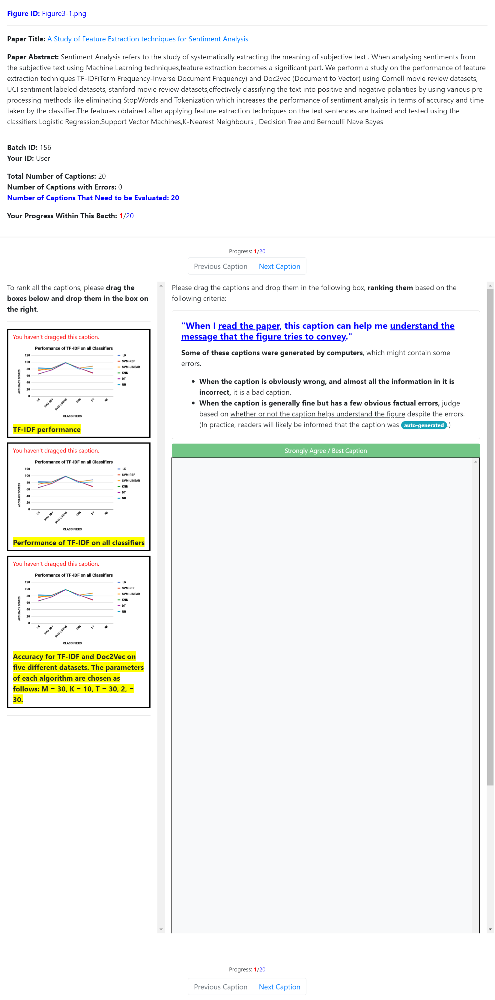
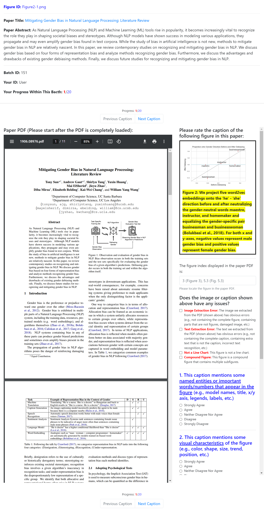
Appendix E Additional Experimental Results
In this section, we show all the additional experimental results mentioned in the experiment and analysis.
Normalization Scores.
Figures 8, 9, 10 and 11 shows the relationship between generation text length and performance (ROUGE-1, ROUGE-L, MoverScore, and BERTScore). The random lines indicate that the text length and the performance are not independent, suggesting that normalization over text length is needed. Table 11 shows the corresponding random scores for each of the metrics used in Table 2.
Examples.
Figure 7 shows two samples of generation output. The information generated by PegasusP+O+B could be helpful (A), but it could also introduce factual errors (B).
Performance in Different Quality Beams.
Figure 12 shows the ROUGE-1 and ROUGE-L changes in beams of different quality. We can see findings similar to Section 8.1 where among different generation models, only the one trained with data quality control (i.e., PegasusP+O+B) performed better in the helpful beam, generating captions more similar to helpful captions.
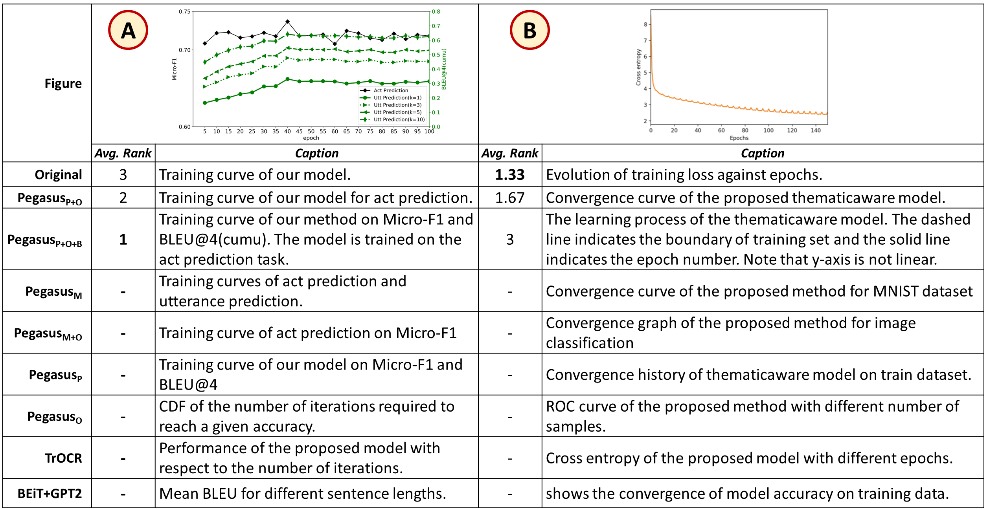
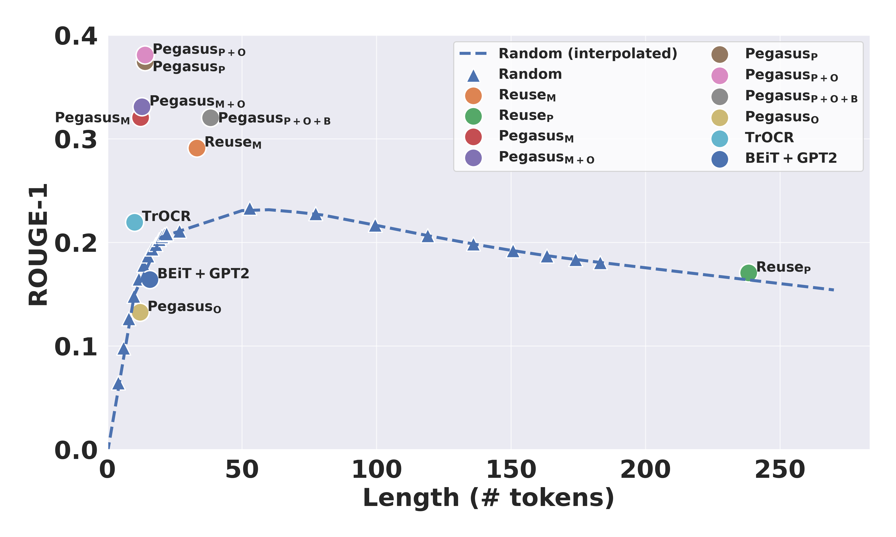
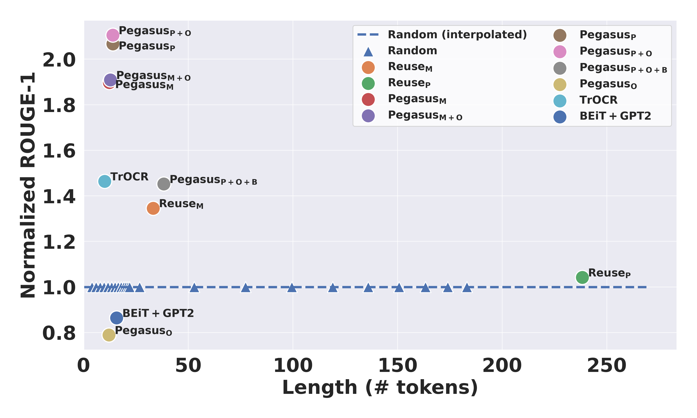
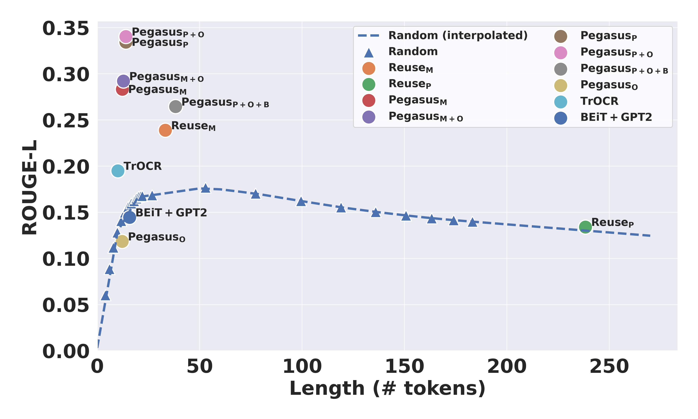
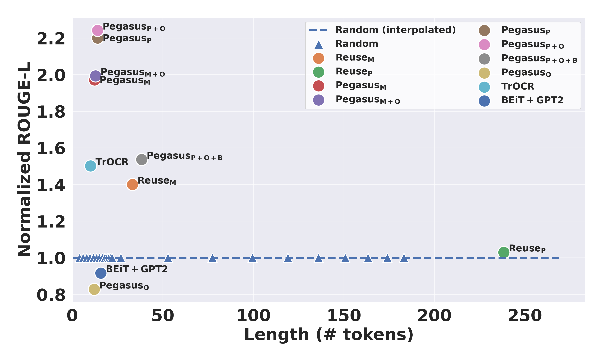
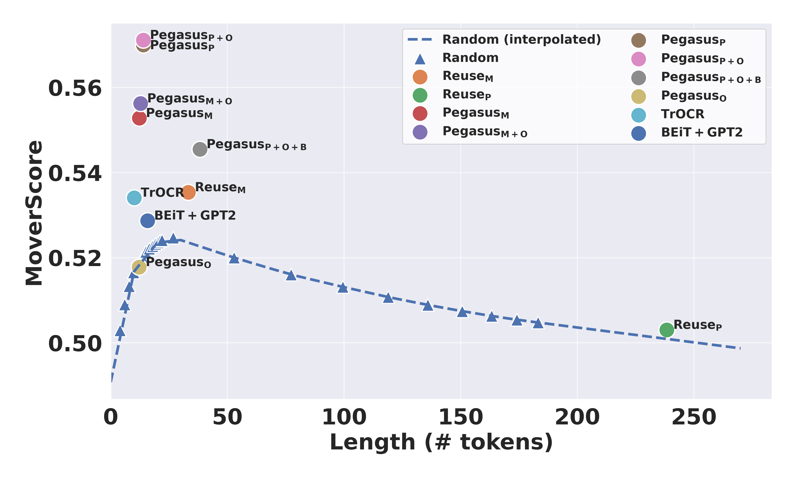
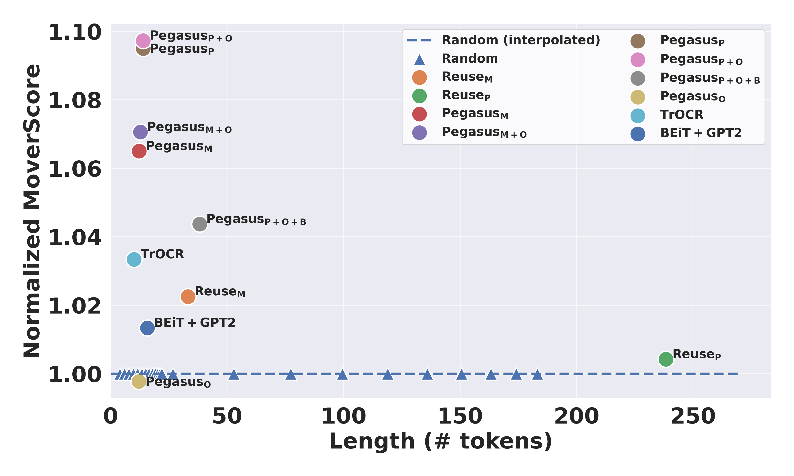
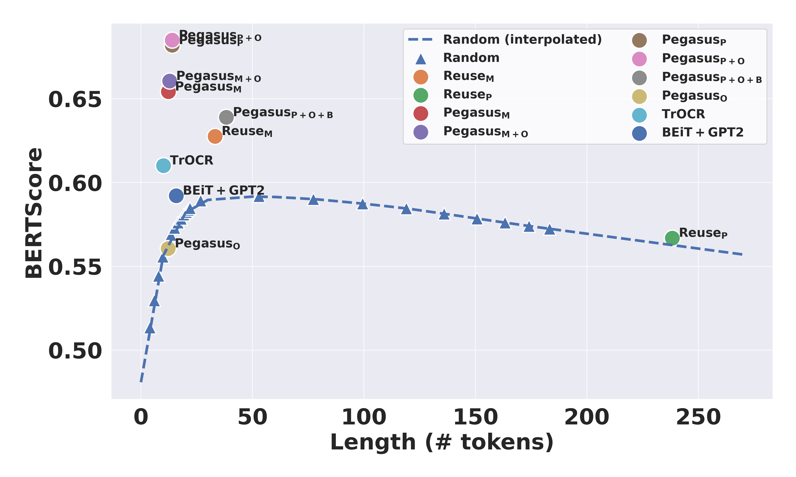
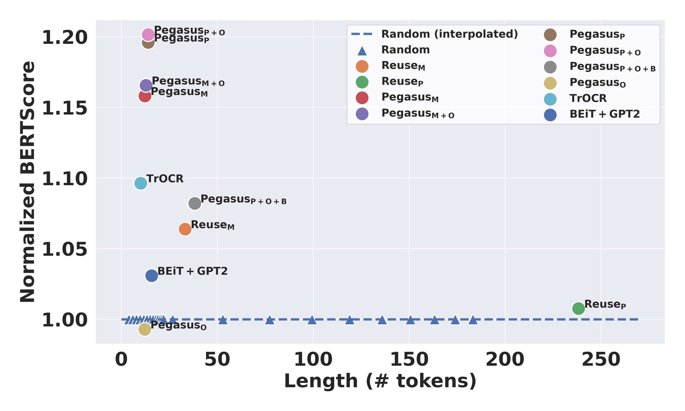
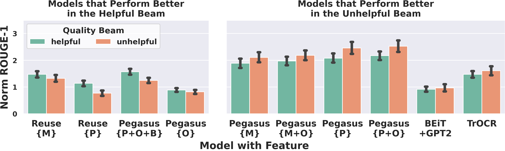
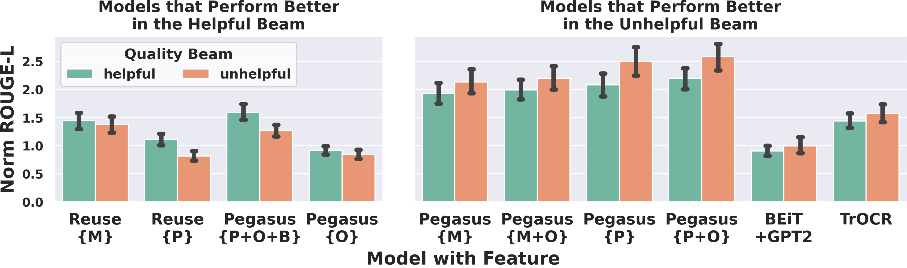
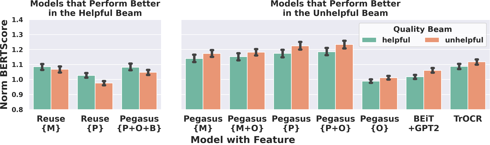
| Model | Feature | Length | Rouge-1 (F1) | Rouge-2 (F1) | Rouge-L (F1) | WMS | BERTScore |
| Rand | Rand | Rand | Rand | Rand | |||
| Reuse | M | 33.2 | .216 | .077 | .171 | .524 | .590 |
| P | 238.3 | .164 | .088 | .130 | .501 | .563 | |
| W[0, 1] | 50.3 | .231 | .087 | .176 | .520 | .592 | |
| W[0, 2] | 68.0 | .230 | .092 | .173 | .518 | .591 | |
| W[1, 1] | 67.8 | .230 | .092 | .173 | .518 | .591 | |
| W[2, 2] | 98.7 | .217 | .095 | .162 | .513 | .588 | |
| Pegasus | M | 12.2 | .169 | .053 | .144 | .519 | .565 |
| M+O | 12.8 | .173 | .055 | .147 | .520 | .567 | |
| P | 14.0 | .181 | .058 | .152 | .521 | .570 | |
| P+O | 14.0 | .181 | .058 | .152 | .521 | .570 | |
| P+O+B | 38.3 | .221 | .080 | .172 | .523 | .590 | |
| O | 12.1 | .168 | .052 | .143 | .519 | .565 | |
| TrOCR | Figure | 10.0 | .150 | .044 | .130 | .517 | .557 |
| BEiT+GPT2 | 15.8 | .190 | .062 | .158 | .522 | .574 |